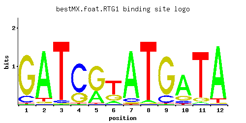

RTG1
YOL067C
Transcription factor (bHLH) involved in interorganelle communication between mitochondria, peroxisomes, and nucleus
Best-performing DNA-binding model.

View and copy the recommended matrices ↘
A | 0.01 0.89 0.01 0.01 0.30 0.12 0.89 0.04 0.01 0.71 0.03 0.92 C | 0.14 0.01 0.04 0.74 0.01 0.02 0.07 0.01 0.16 0.09 0.01 0.01 G | 0.84 0.04 0.01 0.25 0.68 0.26 0.03 0.01 0.83 0.15 0.08 0.01 T | 0.01 0.06 0.93 0.01 0.01 0.61 0.01 0.94 0.01 0.04 0.88 0.07
A | 1 89 1 1 30 12 89 4 1 71 3 92 C | 14 1 4 74 1 2 7 1 16 9 1 1 G | 84 4 1 25 68 26 3 1 83 15 8 1 T | 1 6 93 1 1 61 1 94 1 4 88 7
A | -3.47 1.02 -3.47 -3.47 -0.06 -0.98 1.02 -2.08 -3.47 0.80 -2.37 1.06 C | -0.25 -2.89 -1.50 1.41 -2.89 -2.20 -0.94 -2.89 -0.12 -0.69 -2.89 -2.89 G | 1.54 -1.50 -2.89 0.33 1.33 0.37 -1.79 -2.89 1.53 -0.18 -0.81 -2.89 T | -3.47 -1.67 1.07 -3.47 -3.47 0.65 -3.47 1.08 -3.47 -2.08 1.01 -1.52
Alternative candidate matrices 4
Historical matrix candidates from the original ScerTF database. Expand a source to inspect its original logo, scores, and matrix values.
RTG1_BFoat et. al.P = 0.5553View matrix ↘
RTG1_CFoat et. al.P = 1View matrix ↘
RTG1_AMorozov et. al.P = 0.5688View matrix ↘
RTG1_BMorozov et. al.P = 0.5967View matrix ↘
Gene-level annotations and interactions.
Genes bound in ChIP-chip experiments 76 genes
YAL028W, YAL029C, YBL097W, YBR245C, YBR275C, YCR018C-A, YCR019W, YDL073W, YDL074C, YDL247W, YDR045C, YDR179C, YDR179W-A, YDR193W, YDR284C, YDR285W, YDR298C, YDR299W, YDR394W, YDR440W, YDR473C, YER049W, YER057C, YER058W, YER139C, YER140W, YER142C, YER143W, YGL001C, YGL133W, YGL207W, YGL258W, YGR098C, YGR099W, YGR112W, YGR167W, YGR289C, YHL008C, YHR028C, YHR176W, YIL156W, YIL157C, YJL037W, YJL038C, YJR030C, YJR051W, YJR098C, YJR099W, YJR100C, YKL071W, YKL085W, YKL162C, YKR098C, YKR099W, YLR353W, YLR363C, YLR364W, YML094W, YML095C, YMR089C, YMR090W, YMR098C, YMR125W, YMR126C, YMR178W, YMR257C, YNL188W, YNL303W, YNL304W, YNL305C, YNL323W, YNL325C, YPL014W, YPL015C, YPL251W, YPL253C
Genes affected by TF deletion 54 genes
YKL043W, YLR432W, YPL240C, YOR038C, YPL016W, YHR057C, YDL188C, YER028C, YOR165W, YBR093C, YDR461W, YDR467C, YDR281C, YOR043W, YCR045C, YGR131W, YIR036C, YDL196W, YHR215W, YBR105C, YDR169C, YFL016C, YAR071W, YAR075W, YHR216W, YNL064C, YJL068C, YBL007C, YBR146W, YDR543C, YFL026W, YFR021W, YGR077C, YGR019W, YKL033W-A, YLR354C, YOL120C, YDL049C, YJL160C, YHR202W, YOR027W, YMR034C, YOL065C, YOL067C, YGL032C, YJL076W, YPL075W, YLR023C, YNL141W, YLR146C, YOL101C, YOR306C, YJL200C, YNL007C